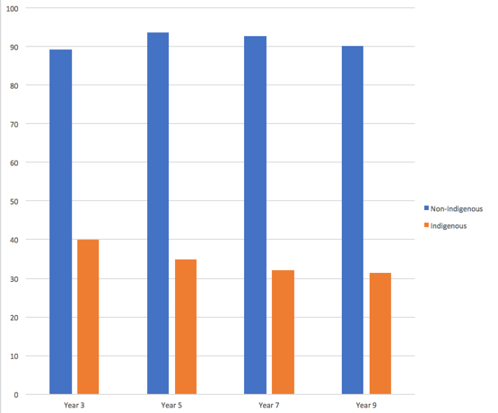
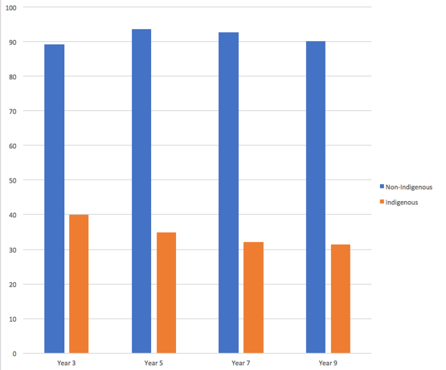
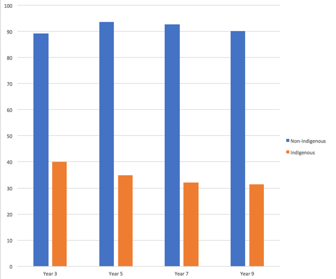

and 9 for Non-Indigenous and Indiginous children in the Norther Teritory. Data Source: NAPLAN reesults.
Data visualization is an interdisciplinary field that deals with the graphic representation of data.
It is a particularly efficient way of communicating when the data is numerous as for example a Time Series.
From an academic point of view, this representation can be considered as a mapping between the original data (usually numerical) and graphic elements (for example,
lines or points in a chart). The mapping determines how the attributes of these elements vary according to the data.
In this light, a bar chart is a mapping of the length of a bar to a magnitude of a variable.
Since the graphic design of the mapping can adversely affect the readability of a chart, mapping is a core competency of Data visualization.
Data visualization has its roots in the field of Statistics and is therefore generally considered a branch of Descriptive Statistics.
However, because both design skills and statistical and computing skills are required to visualize effectively,
it is argued by some authors that it is both an Art and a Science.
Reference

To communicate information clearly and efficiently, data visualization uses statistical graphics, plots, information graphics and other tools.
Numerical data may be encoded using dots, lines, or bars, to visually communicate a quantitative message.
Effective visualization helps users analyze and reason about data and evidence. It makes complex data more accessible, understandable and usable.
Users may have particular analytical tasks, such as making comparisons or understanding causality, and the design principle of the graphic
(i.e., showing comparisons or showing causality) follows the task. Tables are generally used where users will look up a specific measurement,
while charts of various types are used to show patterns or relationships in the data for one or more variables.
Data visualization refers to the techniques used to communicate data or information by encoding it as visual objects
(e.g., points, lines or bars) contained in graphics. The goal is to communicate information clearly and efficiently to users.
It is one of the steps in data analysis or data science.
According to Vitaly Friedman (2008) the "main goal of data visualization is to communicate information clearly and effectively through graphical means.
It doesn't mean that data visualization needs to look boring to be functional or extremely sophisticated to look beautiful.
To convey ideas effectively, both aesthetic form and functionality need to go hand in hand,
providing insights into a rather sparse and complex data set by communicating its key-aspects in a more intuitive way.
Yet designers often fail to achieve a balance between form and function, creating gorgeous data visualizations which fail to serve their main purpose — to communicate information".[4]
Indeed, Fernanda Viegas and Martin M.
Wattenberg suggested that an ideal visualization should not only communicate clearly, but stimulate viewer engagement and attention.
Data visualization is closely related to information graphics,
information visualization, scientific visualization, exploratory data analysis and statistical graphics. In the new millennium,
data visualization has become an active area of research, teaching and development.
According to Post et al. (2002), it has united scientific and information visualization.
In the commercial environment data vizualisation is often referred to as dashboards. Infographics are another very common form of data vizualisation.
Reference